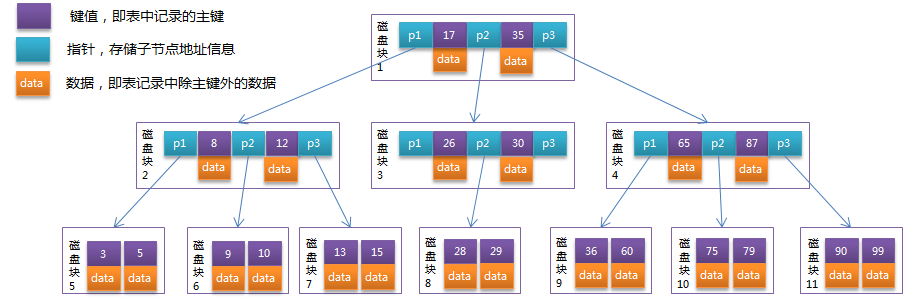

要了解B+树，我们首先了解B树。
1. B树
B树即B-树（中间不是减号，Balance Tree），是一种多路平衡查找树。
我们描述一颗B树要指定它的阶数，阶数表示了一个结点最多可以有多少个孩子结点。
比如：
- 当阶数m=3时，则表示该B树一个结点最多有三个孩子结点。
- 当阶数m=2时，则表示该B树一个结点最多有两个孩子结点，该B树其实就是二叉排序树。
1.1 定义
规定了一颗m阶的B树要有以下特征：
- 树中每个结点最多有m个孩子结点，树中每个结点最多有m-1个元素。
- 根结点至少要有两个孩子结点。
- 中间结点至少要有seil(m / 2)个孩子结点。
- 中间结点和叶子结点至少要有seil(m / 2) - 1个元素。
- 每个结点中的元素都按照从左到右从小到大的顺序排列，每个元素的左子树中的所有元素都小于它，每个元素的右子树中的所有元素都大于它。
- 所有叶子结点都位于同一层。
1.2 图示
以下是一颗3阶B树。

B树中所有节点都存储data。
1.3 B树的操作
可以参考以下博文：
https://www.yiibai.com/data_structure/b-tree.html
1.4 应用
现实应用B树，B树是非常“矮胖”的，即树的阶数特别大，如m = 1000，那么树的一个结点最多可以储存999个元素，这样一来树的高度就特别小。
B树主要应用在数据库的索引上，如非关系型数据库MongoDB的索引就是用了B树这种数据结构，大大减少了磁盘IO次数，大大提高了性能。
注意：
- 数据库索引都是存储在磁盘上的，当数据量非常庞大时，索引的大小可能有几个G。
- 我们利用索引查询时，不可能把整个索引都加载到内存，只能逐一加载每一个磁盘页，每个磁盘页对应着树的每一个结点。
- 这样一来树的最大高度决定了磁盘IO的最大次数，所以使用“矮胖”的B树。
- B树在查询的比较次数并不比平衡二叉树少，因为单一结点里存储的元素特别多。但是相比磁盘IO，内存中的耗时几乎可以忽略，所以只要树高度足够低，IO次数足够少，就大大提高性能。想象一下，上百万的数据中查询只发生了3次IO，性能是如何的强大啊！
2. B+树
2.1 定义
B+树其实是B树的一种变体，有着比B树更高的查询性能。
B+树除了有B树的行政，还有以下特点：
- 有k个子树的中间节点包含有k个元素（B树中是k-1个元素），每个元素不保存数据，只用来索引，所有数据都保存在叶子节点。
- 所有的叶子结点中包含了全部元素的信息，及指向含这些元素记录的指针，且叶子结点本身依关键字的大小自小而大顺序链接。
- 所有的中间节点元素都同时存在于子节点，在子节点元素中是最大（或最小）元素。
2.2 图示
以下是一颗3阶B+树。
B+树只有叶子结点存储data。MyISAM中data存储key对应的那行数据的物理地址。InnoDB中data存储key所对应那行除key外的所有数据。
2.2 应用
关系型数据库如MySQL的MyISAM表和InnoDB表等的索引就是使用了B+树的数据结构，B+树相比于B树：
- 总数据量相等的情况下，B+树单一结点存储更多元素，使树高度降低，IO次数减少。
- 查询性能稳定，因为每一次查询都要查询到叶子结点。而B树不稳定，最优查询到根节点，最坏查询到叶子结点。
- 所有叶子结点形成有序链表，范围查询性能大大优于B树